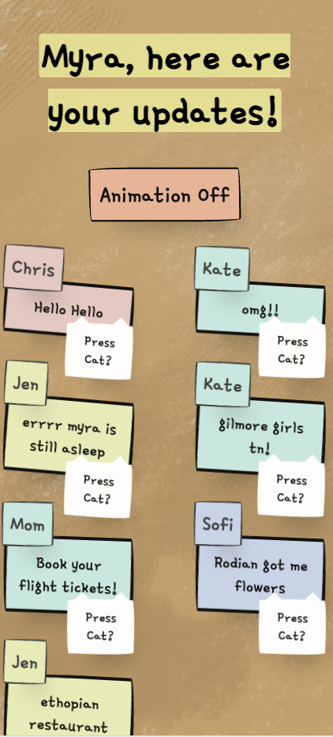
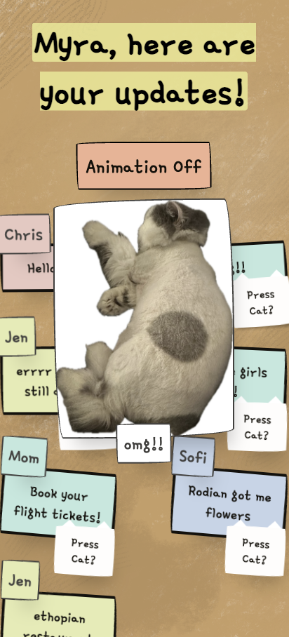
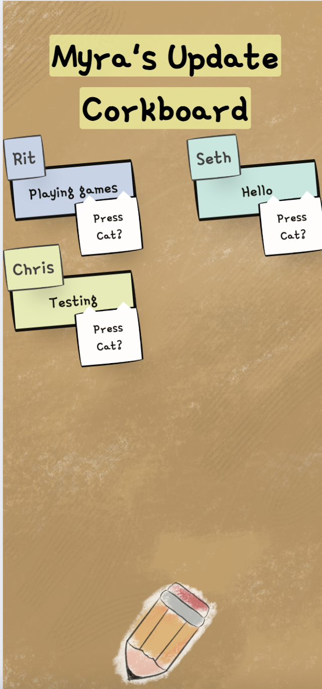
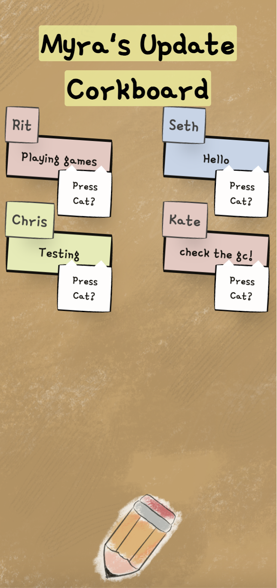
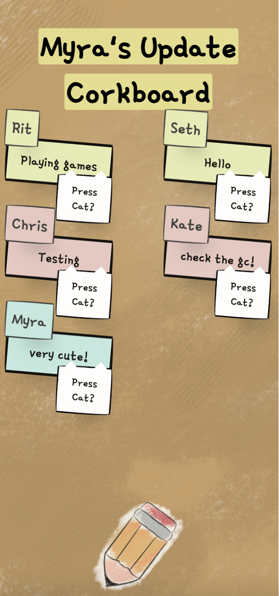
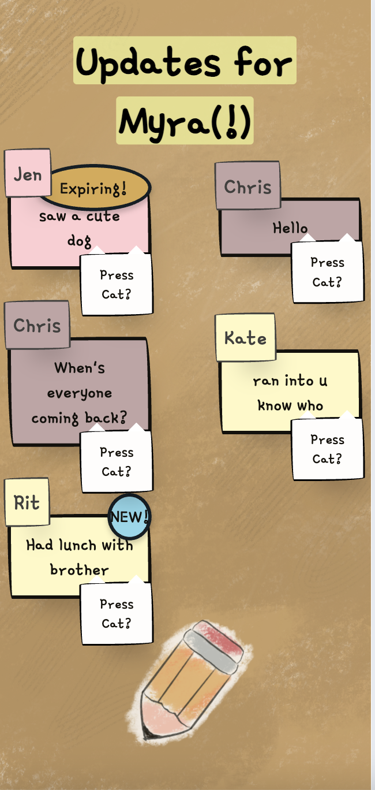
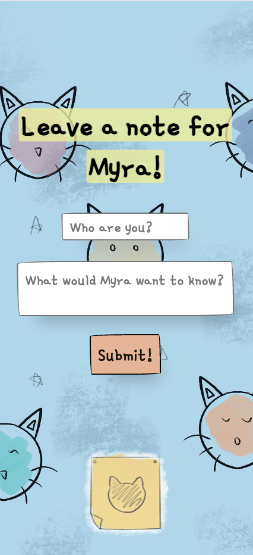
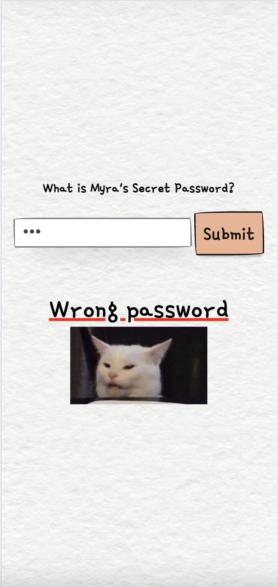

Documentation
Summary
Target: Myra (my suitemate)
Tool Description: a website that allows friends to leave notes to Myra and allows her to replay those notes as meows from her favorite cat memes based on the length of the notes.
Why I’m making it: Myra wants to keep in touch with her friends who she sometimes does not see as much, as it’s difficult to keep up with all that goes on at Yale. Functions similar to Snapchat/Instagram Stories, but also sort of like a group chat - exclusive to who Myra gives her password out to.
Myra wants a private social space, as she wants to know what happens with her friends privately, but does not care for more public displays for people she doesn't know well.
The emphasis is then making this a comfortable and private space for Myra and her friends.
Link to Project Here
Observations
People used it sort of like a group chat, sharing small updates sometimes when things happened; sometimes used as broadcasting announcements
People enjoyed the cat memes and were curious about the functions
More public than a group chat, but not as public as a social media platform
Changes I made
Added admin functionality, where Myra gets new images (her cat Hondo, not just random cats) and text if she enters admin password. She also cannot access the note screen if she enters via admin password.
Animation pause option, animation randomness
Hashed the password for harder access into the site







